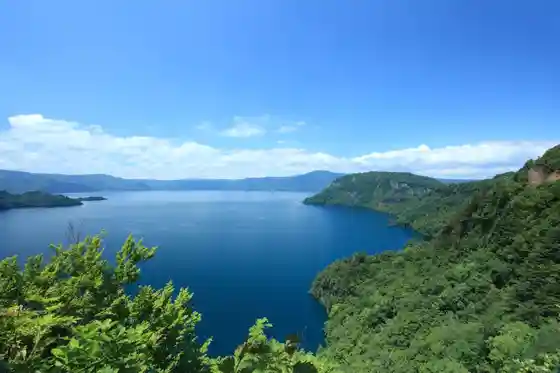
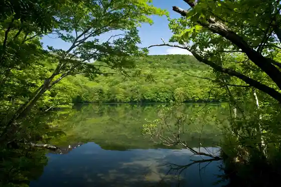
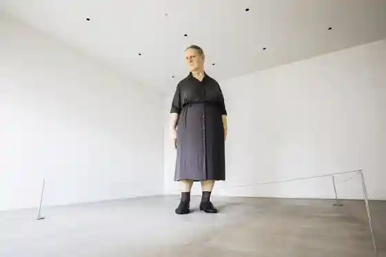
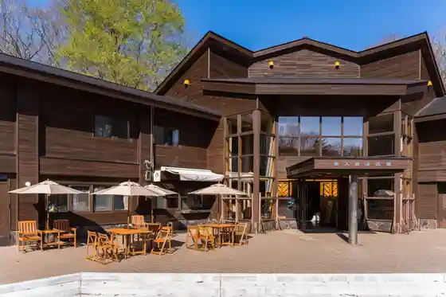

Oirase Keiryu
Towada, Aomori · 0176-74-1233 · Official / source link
Towada Mizumi
Towada, Aomori · 0176-75-1531 · Official / source link

Tsuta Numa
Towada, Aomori · 0176-24-3006 · Official / source link

Towada Gendai Art Museum
Towada, Aomori · 0176-20-1127 · Official / source link

Oirase Keiryu Kan
Towada, Aomori · 0176-74-1233 · Official / source link

Towada Mizumi Otome no Zo
Towada, Aomori · 0176-75-1531 · Official / source link
Tsuta Onsen
Towada, Aomori · 0176-74-2311 · Official / source link
Tsuta Shichi Numa
Towada, Aomori · 0176-24-3006 · Official / source link
Towada Shrine
Towada, Aomori · 0176-75-2508 · Official / source link
Oirase Keiryu Sansaku Tour
Towada, Aomori · 017-718-8557 · Official / source link
Tezu Kuri Village Koi So Sato
Towada, Aomori · 0176-27-2516 · Official / source link
Oirase Ranpu Workshop
Towada, Aomori · 080-2165-7454 · Official / source link
Kan Mizumi Dai
Towada, Aomori · 0176-75-1531 · Official / source link
Towada Oirase Kanko Kiko Tourist Information / Towada Kanko Bussan Center
Towada, Aomori · 0176-24-3006 · Official / source link
Towada Kancho Machi Tori (Koma Kaido)
Towada, Aomori · 0176-24-3006 · Official / source link
Towada Baji Park Koma Kko Land
Towada, Aomori · 0176-26-2100 · Official / source link
Roadside Station Oirase (Oirase Roman Park)
Towada, Aomori · 0176-72-3201 · Official / source link
Oirase Keiryu Ko Gasanpo
Towada, Aomori · 080-6033-2510 · Official / source link
Oirase Keiryu Onsen Ski Area (Kyu : Towada Mizumi Onsen Ski Area)
Towada, Aomori · 0176-74-2008 · Official / source link
Nitobe Inazo Memorial Museum
Towada, Aomori · 080-5578-5939 · Official / source link
Roadside Station Towada (Towadapia)
Towada, Aomori · 0176-28-3790 · Official / source link
Suiren Numa
Towada, Aomori · 0176-75-2425 · Official / source link
Towada Bijita Center
Towada, Aomori · 0176-75-1015 · Official / source link
Iguru Tsukuri Experience in Takiyama Ski Area
Towada, Aomori · 0176-24-3006 · Official / source link
Igururesutoran in Takiyama Ski Area
Towada, Aomori · 0176-24-3006 · Official / source link
Kimigara Surippa Kimigara Zori
Towada, Aomori · 0176-28-3611 · Official / source link
Towada Sauna
Towada, Aomori · Official / source link
Oirase Yusui Kan
Towada, Aomori · 0176-74-1212 · Official / source link
Towada Ei U Taru Bu Campground
Towada, Aomori · 0176-75-2477 · Official / source link
Towada Mizumi Kanko Koryu Center Puratto
Towada, Aomori · 0176-75-1531 · Official / source link
Towada Chiiki Koryu Center (Towafuru)
Towada, Aomori · 0176-51-3201 · Official / source link
Oirase Mosuboru Workshop
Towada, Aomori · 080-2165-7454 · Official / source link
Te Bura Kyanpu in Oirase Roman Park
Towada, Aomori · 0176-24-3006 · Official / source link
Towada Mizumi SUP Tour Autumn Leaves SUP Tour
Towada, Aomori · 017-718-8557 · Official / source link
Towada Joba Kurabu
Towada, Aomori · 0176-26-2945 · Official / source link
Kyu Kasaishi Ie House
Towada, Aomori · 0176-74-2547 · Official / source link
Oirase Shizen Gaido Tour
Towada, Aomori · 0176-72-2780 · Official / source link
Towada Mizumi Rekishi Kaiun Sansaku
Towada, Aomori · 080-1817-0310 · Official / source link
Towada Mizumi Folk Museum
Towada, Aomori · 0176-74-2547 · Official / source link
Numabukuro Meisui Park
Towada, Aomori · 0176-51-6726 · Official / source link
Towada Kyodo Kan
Towada, Aomori · 0176-72-2340 · Official / source link
Oirase Keiryu : Matsumi no Taki Saikuringu Tour
Towada, Aomori · 0176-23-1926 · Official / source link
Club Shuhen Soto Jo
Towada, Aomori · 0176-26-2945 · Official / source link